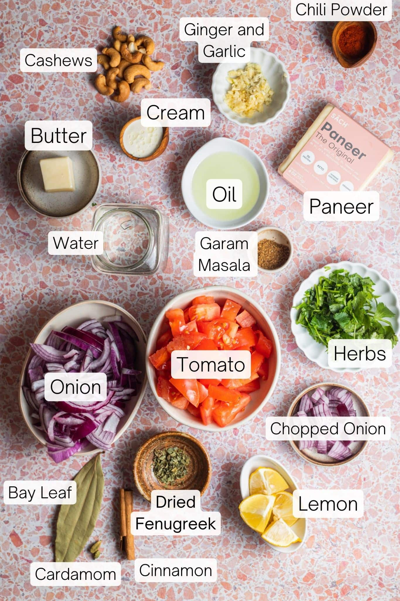

Paneer Butter Masala Recipe

Ingredients
- 250g paneer (cubed)
- 2 tablespoons butter
- 1 tablespoon oil
- 1 large onion (finely chopped)
- 2 tomatoes (pureed)
- 1 tablespoon ginger-garlic paste
- 1/2 cup cream
- 1 teaspoon cumin seeds
- 1 teaspoon coriander powder
- 1 teaspoon garam masala
- 1/2 teaspoon red chili powder
- Salt to taste
- Fresh coriander leaves (for garnish)
Instructions
- Heat butter and oil in a pan. Add cumin seeds and let them splutter.
- Add chopped onions and sauté until golden brown.
- Stir in ginger-garlic paste and cook for a minute until fragrant.
- Add tomato puree and cook until the oil separates from the mixture.
- Mix in coriander powder, red chili powder, and salt. Cook for a few minutes.
- Add the paneer cubes and mix well, ensuring they're coated with the masala.
- Stir in cream and garam masala; cook for another 5 minutes.
- Garnish with fresh coriander leaves and serve hot with naan or rice.
Dietary Restrictions
This recipe is vegetarian. For a vegan version, substitute paneer with tofu and use coconut cream instead of dairy cream.
Back to Recipes